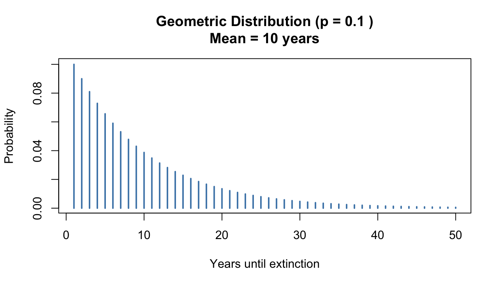
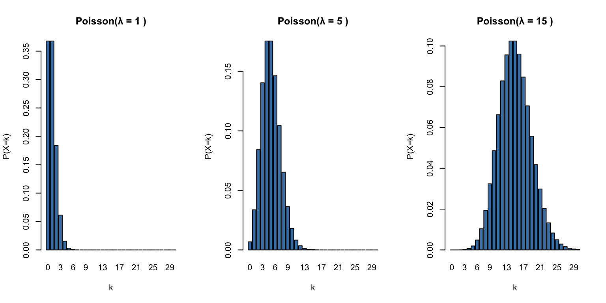
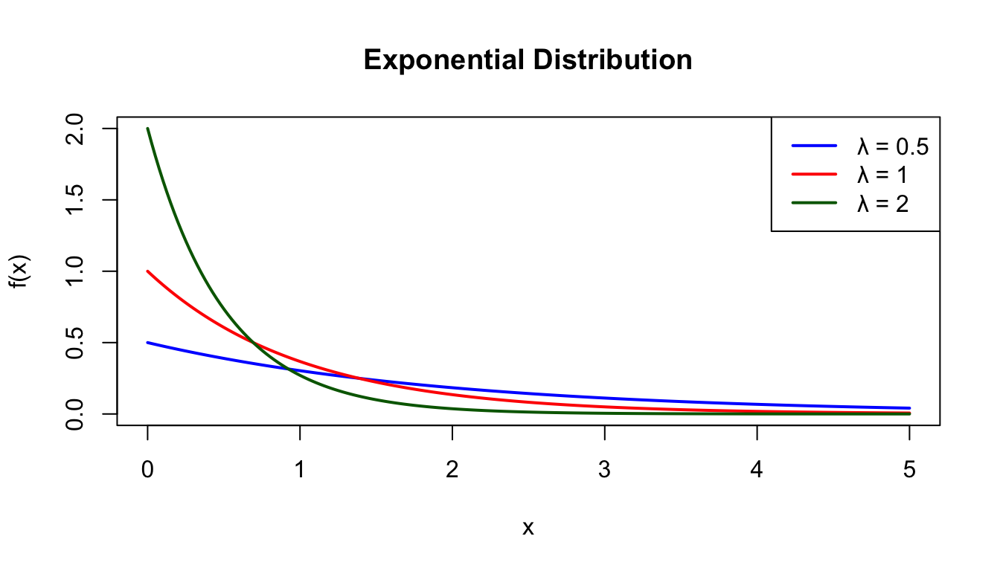
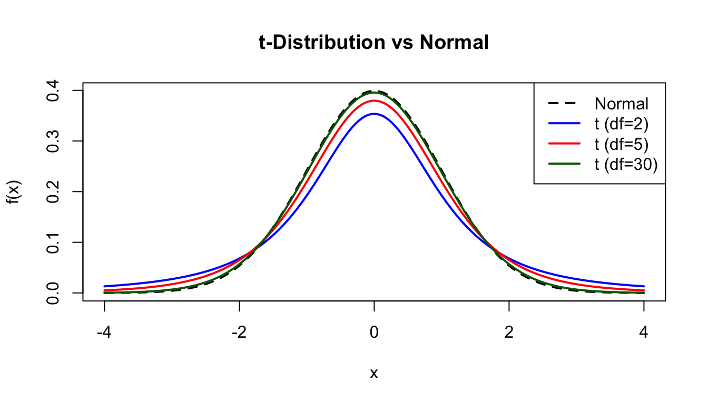
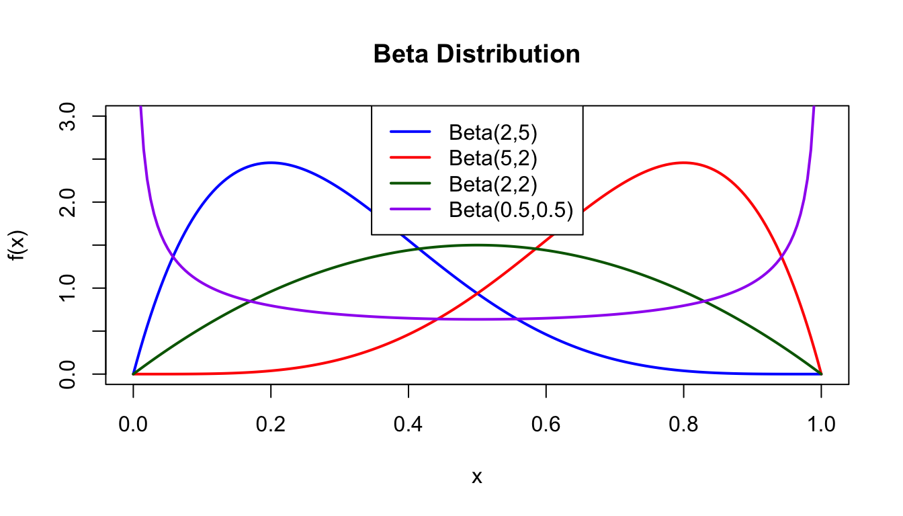

This appendix provides a reference for probability distributions commonly encountered in biological and bioengineering applications. Each distribution is characterized by its probability function, parameters, mean, variance, and typical applications.
50.1 Discrete Distributions
Discrete distributions describe random variables that take on countable values (integers).
Bernoulli Distribution
The Bernoulli distribution describes a single trial with two possible outcomes (success/failure).
Probability mass function:\[P(X = k) = p^k(1-p)^{1-k}, \quad k \in \{0, 1\}\]
Parameters:\(p\) = probability of success (0 ≤ p ≤ 1)
Mean:\(E[X] = p\)
Variance:\(\text{Var}(X) = p(1-p)\)
Applications:
Single coin flip
Whether a patient responds to treatment
Whether an allele is inherited
Code
# Bernoulli with different p valuesp_vals <-c(0.2, 0.5, 0.8)data.frame(outcome =rep(c("Failure", "Success"), 3),p =rep(p_vals, each =2),prob =c(1-p_vals[1], p_vals[1], 1-p_vals[2], p_vals[2], 1-p_vals[3], p_vals[3])) %>%ggplot(aes(x = outcome, y = prob, fill =factor(p))) +geom_col(position ="dodge") +labs(title ="Bernoulli Distribution", y ="Probability", fill ="p")
Figure 50.1: Bernoulli distribution showing probability of success and failure for different values of p
Sampling Process Example
Consider recording whether a neuron fires in response to a stimulus. Each trial represents exposing the neuron to a brief stimulus pulse and observing whether it fires (success = 1) or not (failure = 0). If the neuron has a baseline firing probability of \(p = 0.3\) in response to the stimulus, each observation is a Bernoulli trial.
The binomial distribution describes the number of successes in \(n\) independent Bernoulli trials.
Probability mass function:\[P(X = k) = \binom{n}{k} p^k (1-p)^{n-k}\]
Parameters:
\(n\) = number of trials
\(p\) = probability of success on each trial
Mean:\(E[X] = np\)
Variance:\(\text{Var}(X) = np(1-p)\)
Applications:
Number of heads in \(n\) coin flips
Number of mutant alleles in offspring
Number of patients responding to treatment out of \(n\) treated
Code
# Binomial distributions with n=20par(mfrow =c(1, 3))for (p inc(0.2, 0.5, 0.8)) { x <-0:20barplot(dbinom(x, 20, p), names.arg = x,main =paste("Binomial(n=20, p=", p, ")"),xlab ="k", ylab ="P(X=k)", col ="steelblue")}
Figure 50.2: Binomial distribution with n=20 trials for different probabilities of success
R functions:dbinom(), pbinom(), qbinom(), rbinom()
Sampling Process Example
A plant biologist plants 100 seeds of a particular species and wants to know how many will germinate. Based on previous experiments, each seed has a probability \(p = 0.75\) of germinating independently. The number of seeds that germinate follows a binomial distribution with \(n = 100\) and \(p = 0.75\).
cat("Expected value (np):", n_seeds * p_germinate)
Expected value (np): 75
Geometric Distribution
The geometric distribution describes the number of trials needed to get the first success.
Probability mass function:\[P(X = k) = (1-p)^{k-1}p, \quad k = 1, 2, 3, \ldots\]
Parameters:\(p\) = probability of success
Mean:\(E[X] = \frac{1}{p}\)
Variance:\(\text{Var}(X) = \frac{1-p}{p^2}\)
Applications:
Number of trials until first success
Time until extinction of an endangered population
Number of reads until finding a specific sequence
Code
# Geometric distribution example# If extinction probability is 0.1 per year, expected time to extinction?p <-0.1x <-1:50plot(x, dgeom(x-1, p), type ="h", lwd =2, col ="steelblue",xlab ="Years until extinction", ylab ="Probability",main =paste("Geometric Distribution (p =", p, ")\nMean =", 1/p, "years"))

Figure 50.3: Geometric distribution showing the probability of years until extinction when p = 0.1
R functions:dgeom(), pgeom(), qgeom(), rgeom()
Sampling Process Example
In a PCR amplification experiment, a researcher is attempting to amplify a rare target sequence. Each PCR cycle has a probability \(p = 0.15\) of successfully amplifying the target to detectable levels. The number of cycles until the first successful amplification follows a geometric distribution.
Code
# Simulate PCR amplification trialsset.seed(789)p_success <-0.15# Sample number of cycles until first successcycles_to_success <-rgeom(1, prob = p_success) +1# +1 because rgeom gives failures before successcat("Cycles until first successful amplification:", cycles_to_success, "\n")
The negative binomial extends the geometric distribution to describe the number of trials needed to achieve \(r\) successes.
Probability mass function:\[P(X = k) = \binom{k-1}{r-1} p^r (1-p)^{k-r}, \quad k = r, r+1, r+2, \ldots\]
Parameters:
\(r\) = number of successes needed
\(p\) = probability of success
Mean:\(E[X] = \frac{r}{p}\)
Variance:\(\text{Var}(X) = \frac{r(1-p)}{p^2}\)
Applications:
Overdispersed count data (variance > mean)
RNA-seq count modeling
Number of trials until \(r\) successes
Code
# Negative binomial example# Predator must capture 10 prey before reproductionr <-10p <-0.1x <- r:100plot(x, dnbinom(x - r, size = r, prob = p), type ="h", lwd =2, col ="steelblue",xlab ="Days until reproduction", ylab ="Probability",main =paste("Negative Binomial (r=10, p=0.1)\nMean =", r/p, "days"))
Figure 50.4: Negative binomial distribution showing days until a predator captures 10 prey (r=10, p=0.1)
R functions:dnbinom(), pnbinom(), qnbinom(), rnbinom()
Sampling Process Example
A genomics researcher is sequencing DNA to identify rare somatic mutations. Each sequencing read has a probability \(p = 0.05\) of covering a region containing a mutation of interest. The researcher needs to find \(r = 10\) such mutations to have sufficient statistical power. The number of reads required follows a negative binomial distribution.
Code
# Simulate sequencing until finding r mutationsset.seed(101)r_mutations <-10p_mutation <-0.05# Sample number of reads until r mutations found# rnbinom gives number of failures before r successesreads_needed <-rnbinom(1, size = r_mutations, prob = p_mutation) + r_mutationscat("Reads needed to find", r_mutations, "mutations:", reads_needed, "\n")
Note: For a Poisson distribution, mean equals variance. When observed variance exceeds the mean, the data are called “overdispersed.”
Applications:
Number of mutations per gene
Number of cells in a microscope field
Number of organisms per sample area
Rare event counts in genomics
Code
# Poisson distributions with different lambda valuespar(mfrow =c(1, 3))for (lambda inc(1, 5, 15)) { x <-0:30barplot(dpois(x, lambda), names.arg = x,main =paste("Poisson(λ =", lambda, ")"),xlab ="k", ylab ="P(X=k)", col ="steelblue")}

Figure 50.5: Poisson distribution for different rate parameters (λ = 1, 5, and 15)
R functions:dpois(), ppois(), qpois(), rpois()
Sampling Process Example
In evolutionary genomics, mutations occur randomly along a gene sequence. Consider a gene of fixed length where mutations occur at an average rate of \(\lambda = 3.5\) mutations per gene per million years. The number of mutations observed in a particular gene follows a Poisson distribution.
Code
# Simulate mutation counts in genesset.seed(202)lambda_mutations <-3.5# Sample mutation count for a single genemutations_in_gene <-rpois(1, lambda = lambda_mutations)cat("Mutations observed in one gene:", mutations_in_gene, "\n")
cat("Expected value (λ):", lambda_mutations, "\n")
Expected value (λ): 3.5
Code
cat("Note: For Poisson, mean ≈ variance")
Note: For Poisson, mean ≈ variance
50.2 Continuous Distributions
Continuous distributions describe random variables that can take any value in some range.
Uniform Distribution
The uniform distribution assigns equal probability to all values in a specified range.
Probability density function:\[f(x) = \frac{1}{b-a}, \quad a \leq x \leq b\]
Parameters:
\(a\) = minimum value
\(b\) = maximum value
Mean:\(E[X] = \frac{a+b}{2}\)
Variance:\(\text{Var}(X) = \frac{(b-a)^2}{12}\)
Applications:
Random number generation
Uninformative priors in Bayesian analysis
Equal probability among alternatives
Code
x <-seq(-1, 6, length.out =200)plot(x, dunif(x, min =0, max =5), type ="l", lwd =2, col ="steelblue",xlab ="x", ylab ="f(x)", main ="Uniform Distribution (a=0, b=5)",ylim =c(0, 0.3))polygon(c(0, 0, 5, 5), c(0, 0.2, 0.2, 0), col =rgb(0, 0, 1, 0.3), border =NA)
Figure 50.6: Uniform distribution with equal probability between a=0 and b=5
R functions:dunif(), punif(), qunif(), runif()
Sampling Process Example
In a cell culture experiment, cells are synchronized to divide during a specific 60-minute window. Within this window, the exact timing of any individual cell’s division is equally likely at any moment. If we measure the time (in minutes from the start of the window) when each cell divides, these times follow a uniform distribution between \(a = 0\) and \(b = 60\) minutes.
Code
# Simulate cell division times within a synchronized windowset.seed(303)window_start <-0window_end <-60# Sample division times for 20 cellsn_cells <-20division_times <-runif(n_cells, min = window_start, max = window_end)cat("Division times (minutes):", round(division_times, 1), "\n")
The exponential distribution describes the time between events in a Poisson process.
Probability density function:\[f(x) = \lambda e^{-\lambda x}, \quad x \geq 0\]
Parameters:\(\lambda\) = rate parameter
Mean:\(E[X] = \frac{1}{\lambda}\)
Variance:\(\text{Var}(X) = \frac{1}{\lambda^2}\)
Applications:
Time until next event (radioactive decay, mutations)
Lifespan distributions (constant hazard rate)
Waiting times
Code
# Exponential with different rate parametersx <-seq(0, 5, length.out =200)plot(x, dexp(x, rate =0.5), type ="l", lwd =2, col ="blue",xlab ="x", ylab ="f(x)", main ="Exponential Distribution",ylim =c(0, 2))lines(x, dexp(x, rate =1), lwd =2, col ="red")lines(x, dexp(x, rate =2), lwd =2, col ="darkgreen")legend("topright", c("λ = 0.5", "λ = 1", "λ = 2"),col =c("blue", "red", "darkgreen"), lwd =2)

Figure 50.7: Exponential distribution for different rate parameters (λ = 0.5, 1, and 2)
R functions:dexp(), pexp(), qexp(), rexp()
Sampling Process Example
Bacterial cells divide asynchronously in exponential growth phase. If cells divide at a constant average rate of \(\lambda = 0.5\) divisions per hour (one division every 2 hours on average), the waiting time between successive cell divisions follows an exponential distribution.
Code
# Simulate times between cell divisionsset.seed(404)lambda_rate <-0.5# divisions per hour# Sample inter-division times for 10 successive divisionsn_divisions <-10inter_division_times <-rexp(n_divisions, rate = lambda_rate)cat("Time between divisions (hours):", round(inter_division_times, 2), "\n")
Time between divisions (hours): 1.12 0.21 0.1 0.72 2.39 2.13 1.83 8.49 0.31 0.56
cat("Expected mean (1/λ):", 1/lambda_rate, "hours\n")
Expected mean (1/λ): 2 hours
Code
# Total time for all divisionscat("Total time for", n_divisions, "divisions:", round(sum(inter_division_times), 2), "hours")
Total time for 10 divisions: 17.87 hours
Gamma Distribution
The gamma distribution generalizes the exponential distribution to describe waiting time until the \(r\)th event.
Probability density function:\[f(x) = \frac{\lambda^r}{\Gamma(r)} x^{r-1} e^{-\lambda x}, \quad x \geq 0\]
Parameters:
\(r\) = shape parameter (number of events)
\(\lambda\) = rate parameter
Mean:\(E[X] = \frac{r}{\lambda}\)
Variance:\(\text{Var}(X) = \frac{r}{\lambda^2}\)
Applications:
Time for multiple events to occur
Duration of processes with multiple stages
Prior distributions in Bayesian analysis
Code
# Gamma distribution with different shape parametersx <-seq(0, 15, length.out =200)plot(x, dgamma(x, shape =1, rate =0.5), type ="l", lwd =2, col ="blue",xlab ="x", ylab ="f(x)", main ="Gamma Distribution (rate = 0.5)",ylim =c(0, 0.5))lines(x, dgamma(x, shape =2, rate =0.5), lwd =2, col ="red")lines(x, dgamma(x, shape =5, rate =0.5), lwd =2, col ="darkgreen")legend("topright", c("shape = 1", "shape = 2", "shape = 5"),col =c("blue", "red", "darkgreen"), lwd =2)
Figure 50.8: Gamma distribution with rate = 0.5 for different shape parameters (1, 2, and 5)
R functions:dgamma(), pgamma(), qgamma(), rgamma()
Sampling Process Example
In developmental biology, a cell must complete \(r = 5\) distinct checkpoints before differentiating into a specialized cell type. Each checkpoint is passed at an average rate of \(\lambda = 2\) checkpoints per day. The total time until the cell completes all 5 checkpoints and differentiates follows a gamma distribution.
Code
# Simulate time to complete multiple checkpointsset.seed(505)r_checkpoints <-5lambda_rate <-2# checkpoints per day# Sample differentiation times for 15 cellsn_cells <-15differentiation_times <-rgamma(n_cells, shape = r_checkpoints, rate = lambda_rate)cat("Time to differentiation (days):", round(differentiation_times, 2), "\n")
Time to differentiation (days): 1.22 1.06 1.37 1.74 1.39 2.26 3.64 3.09 2.42 2.24 2.04 4.06 1.8 3.93 3.21
cat("Expected mean (r/λ):", r_checkpoints/lambda_rate, "days")
Expected mean (r/λ): 2.5 days
Normal (Gaussian) Distribution
The normal distribution is the most important continuous distribution in statistics. It arises naturally when many independent factors contribute additively to an outcome.
Probability density function:\[f(x) = \frac{1}{\sqrt{2\pi}\sigma} e^{-\frac{1}{2}\left(\frac{x-\mu}{\sigma}\right)^2}\]
Parameters:
\(\mu\) = mean (location)
\(\sigma\) = standard deviation (scale)
Mean:\(E[X] = \mu\)
Variance:\(\text{Var}(X) = \sigma^2\)
Notation:\(X \sim \mathcal{N}(\mu, \sigma^2)\)
Applications:
Heights, weights, and other biological measurements
Measurement errors
Sampling distributions (via Central Limit Theorem)
Basis for many statistical tests
Code
x <-seq(-4, 8, length.out =200)plot(x, dnorm(x, mean =2, sd =1), type ="l", lwd =2, col ="blue",xlab ="x", ylab ="f(x)", main ="Normal Distribution",ylim =c(0, 0.45))lines(x, dnorm(x, mean =2, sd =0.5), lwd =2, col ="red")lines(x, dnorm(x, mean =2, sd =2), lwd =2, col ="darkgreen")legend("topright", c("μ=2, σ=1", "μ=2, σ=0.5", "μ=2, σ=2"),col =c("blue", "red", "darkgreen"), lwd =2)
Figure 50.9: Normal distribution with mean μ=2 for different standard deviations (σ = 0.5, 1, and 2)
Key properties:
68% of values fall within 1 SD of the mean
95% of values fall within 2 SDs of the mean
99.7% of values fall within 3 SDs of the mean
R functions:dnorm(), pnorm(), qnorm(), rnorm()
Sampling Process Example
Human height is influenced by many genetic and environmental factors that contribute additively. In a population of adult males, height follows approximately a normal distribution with mean \(\mu = 175\) cm and standard deviation \(\sigma = 7\) cm. When we measure heights of individuals, we are sampling from this distribution.
Code
# Simulate measuring heights in a populationset.seed(606)mu_height <-175# cmsigma_height <-7# cm# Sample heights of 30 individualsn_individuals <-30heights <-rnorm(n_individuals, mean = mu_height, sd = sigma_height)cat("Sample heights (cm):", round(heights, 1), "\n")
Figure 50.10: Standard normal distribution showing 68% of values within 1 standard deviation and 95% within 2 standard deviations
Log-Normal Distribution
If \(\ln(X)\) follows a normal distribution, then \(X\) follows a log-normal distribution. This arises when effects are multiplicative rather than additive.
Probability density function:\[f(x) = \frac{1}{x\sigma\sqrt{2\pi}} e^{-\frac{(\ln x - \mu)^2}{2\sigma^2}}, \quad x > 0\]
par(mfrow =c(1, 2))# Log-normal dataset.seed(42)x <-rlnorm(1000, meanlog =1, sdlog =0.5)hist(x, breaks =30, main ="Log-Normal Data", col ="lightblue",xlab ="x", probability =TRUE)curve(dlnorm(x, meanlog =1, sdlog =0.5), add =TRUE, col ="red", lwd =2)# After log transformationhist(log(x), breaks =30, main ="After Log Transform", col ="lightblue",xlab ="log(x)", probability =TRUE)curve(dnorm(x, mean =1, sd =0.5), add =TRUE, col ="red", lwd =2)
Figure 50.11: Log-normal distribution (left) and its transformation to normal distribution after log transformation (right)
R functions:dlnorm(), plnorm(), qlnorm(), rlnorm()
Sampling Process Example
Gene expression levels often follow a log-normal distribution because they result from multiplicative processes (transcription, translation, and degradation rates). When measuring mRNA levels of a particular gene across cells, if the log-transformed expression follows \(\mathcal{N}(\mu = 2, \sigma = 0.6)\), the raw expression levels follow a log-normal distribution.
# Log-transformed data should be approximately normallog_expression <-log(expression_levels)cat("Mean of log-expression:", round(mean(log_expression), 2), "\n")
Mean of log-expression: 2.12
Code
cat("SD of log-expression:", round(sd(log_expression), 2))
SD of log-expression: 0.55
Chi-Square Distribution
The chi-square distribution is the distribution of a sum of squared standard normal variables. It is fundamental to many statistical tests.
Parameters:\(k\) = degrees of freedom
Mean:\(E[X] = k\)
Variance:\(\text{Var}(X) = 2k\)
Applications:
Goodness-of-fit tests
Tests of independence
Variance estimation
Code
x <-seq(0, 20, length.out =200)plot(x, dchisq(x, df =2), type ="l", lwd =2, col ="blue",xlab ="x", ylab ="f(x)", main ="Chi-Square Distribution",ylim =c(0, 0.5))lines(x, dchisq(x, df =5), lwd =2, col ="red")lines(x, dchisq(x, df =10), lwd =2, col ="darkgreen")legend("topright", c("df = 2", "df = 5", "df = 10"),col =c("blue", "red", "darkgreen"), lwd =2)
Figure 50.12: Chi-square distribution for different degrees of freedom (df = 2, 5, and 10)
R functions:dchisq(), pchisq(), qchisq(), rchisq()
Sampling Process Example
In a quality control study, a bioengineering lab measures the precision of a fabrication process by taking repeated measurements of device dimensions. The sample variance \(s^2\) from \(n = 10\) measurements is related to the chi-square distribution. Specifically, \((n-1)s^2/\sigma^2\) follows a chi-square distribution with \(k = n-1 = 9\) degrees of freedom.
Code
# Simulate sampling process to understand variance distributionset.seed(808)n_measurements <-10true_sigma <-2.5# true population standard deviation# Generate many samples and compute their variancesn_samples <-1000sample_variances <-replicate(n_samples, { measurements <-rnorm(n_measurements, mean =100, sd = true_sigma)var(measurements)})# The scaled variances follow chi-squarescaled_variances <- (n_measurements -1) * sample_variances / true_sigma^2cat("Sample variance from one experiment:", round(sample_variances[1], 2), "\n")
The t-distribution arises when estimating the mean of a normally distributed population when the sample size is small and the population standard deviation is unknown.
Parameters:\(\nu\) = degrees of freedom
As \(\nu \to \infty\), the t-distribution approaches the standard normal.
Applications:
t-tests
Confidence intervals for means
Robust regression
Code
x <-seq(-4, 4, length.out =200)plot(x, dnorm(x), type ="l", lwd =2, col ="black", lty =2,xlab ="x", ylab ="f(x)", main ="t-Distribution vs Normal")lines(x, dt(x, df =2), lwd =2, col ="blue")lines(x, dt(x, df =5), lwd =2, col ="red")lines(x, dt(x, df =30), lwd =2, col ="darkgreen")legend("topright", c("Normal", "t (df=2)", "t (df=5)", "t (df=30)"),col =c("black", "blue", "red", "darkgreen"), lwd =2, lty =c(2, 1, 1, 1))

Figure 50.13: Student’s t-distribution compared to normal distribution for different degrees of freedom
R functions:dt(), pt(), qt(), rt()
Sampling Process Example
A pharmacologist is testing the effect of a new drug on blood pressure. She samples \(n = 8\) patients and measures their blood pressure after treatment. The population mean \(\mu\) and standard deviation \(\sigma\) are unknown. To test whether the mean differs from a reference value, she computes a t-statistic: \(t = \frac{\bar{x} - \mu_0}{s/\sqrt{n}}\), which follows a t-distribution with \(\nu = n-1 = 7\) degrees of freedom under the null hypothesis.
cat("Mean of t-statistics:", round(mean(t_statistics), 2), "\n")
Mean of t-statistics: 0.02
Code
cat("SD of t-statistics:", round(sd(t_statistics), 2), "\n")
SD of t-statistics: 1.19
Code
cat("Expected SD for t with df=7:", round(sqrt(7/(7-2)), 2))
Expected SD for t with df=7: 1.18
F Distribution
The F-distribution is the ratio of two chi-square distributions divided by their degrees of freedom. It is used in ANOVA and comparing variances.
Parameters:
\(d_1\) = numerator degrees of freedom
\(d_2\) = denominator degrees of freedom
Applications:
ANOVA F-tests
Comparing variances
Regression significance tests
Code
x <-seq(0, 5, length.out =200)plot(x, df(x, df1 =5, df2 =20), type ="l", lwd =2, col ="blue",xlab ="x", ylab ="f(x)", main ="F Distribution",ylim =c(0, 1))lines(x, df(x, df1 =10, df2 =20), lwd =2, col ="red")lines(x, df(x, df1 =20, df2 =20), lwd =2, col ="darkgreen")legend("topright", c("F(5,20)", "F(10,20)", "F(20,20)"),col =c("blue", "red", "darkgreen"), lwd =2)
Figure 50.14: F distribution for different numerator and denominator degrees of freedom
R functions:df(), pf(), qf(), rf()
Sampling Process Example
An ecologist is comparing the variability in body mass between two populations of birds. Population 1 has \(n_1 = 12\) individuals and population 2 has \(n_2 = 15\) individuals. To test whether the two populations have equal variances, she computes the F-statistic: \(F = \frac{s_1^2}{s_2^2}\), which follows an F-distribution with \(d_1 = n_1 - 1 = 11\) and \(d_2 = n_2 - 1 = 14\) degrees of freedom when the true variances are equal.
Code
# Simulate F-statistic sampling distributionset.seed(1010)n1 <-12n2 <-15true_sigma1 <-5# true SD for population 1true_sigma2 <-5# true SD for population 2 (equal variances)# Simulate many paired samplesn_comparisons <-1000F_statistics <-replicate(n_comparisons, { pop1_masses <-rnorm(n1, mean =100, sd = true_sigma1) pop2_masses <-rnorm(n2, mean =100, sd = true_sigma2) var1 <-var(pop1_masses) var2 <-var(pop2_masses)# Compute F-statistic var1 / var2})cat("First 10 F-statistics:", round(F_statistics[1:10], 2), "\n")
Prior distributions for probabilities (Bayesian analysis)
Modeling proportions
Allele frequencies
Code
x <-seq(0, 1, length.out =200)plot(x, dbeta(x, 2, 5), type ="l", lwd =2, col ="blue",xlab ="x", ylab ="f(x)", main ="Beta Distribution",ylim =c(0, 3))lines(x, dbeta(x, 5, 2), lwd =2, col ="red")lines(x, dbeta(x, 2, 2), lwd =2, col ="darkgreen")lines(x, dbeta(x, 0.5, 0.5), lwd =2, col ="purple")legend("top", c("Beta(2,5)", "Beta(5,2)", "Beta(2,2)", "Beta(0.5,0.5)"),col =c("blue", "red", "darkgreen", "purple"), lwd =2)

Figure 50.15: Beta distribution for different shape parameters showing various distribution shapes
R functions:dbeta(), pbeta(), qbeta(), rbeta()
Sampling Process Example
In population genetics, a researcher is estimating the frequency of a particular allele in a population. Based on prior studies, she has some information about the likely allele frequency, which can be encoded as a beta prior distribution. For example, if previous evidence suggests the allele is moderately common but variable, she might use a Beta(5, 3) distribution to represent her prior beliefs about the allele frequency \(p\) before collecting new data.
Code
# Simulate prior distributions for allele frequenciesset.seed(1111)alpha_param <-5beta_param <-3# Sample possible allele frequencies from priorn_simulations <-1000prior_frequencies <-rbeta(n_simulations, shape1 = alpha_param, shape2 = beta_param)cat("Sample of prior allele frequencies:", round(prior_frequencies[1:10], 3), "\n")
cat("Expected mean (α/(α+β)):", round(alpha_param/(alpha_param + beta_param), 3), "\n")
Expected mean (α/(α+β)): 0.625
Code
# In practice, these could be updated with observed data using Bayesian inference# For example: observing 15 allele A and 5 allele B would update to Beta(5+15, 3+5)
50.3 Summary Table
Distribution
Type
Parameters
Mean
Variance
R prefix
Bernoulli
Discrete
p
p
p(1-p)
binom (n=1)
Binomial
Discrete
n, p
np
np(1-p)
binom
Geometric
Discrete
p
1/p
(1-p)/p²
geom
Neg. Binomial
Discrete
r, p
r/p
r(1-p)/p²
nbinom
Poisson
Discrete
λ
λ
λ
pois
Uniform
Continuous
a, b
(a+b)/2
(b-a)²/12
unif
Exponential
Continuous
λ
1/λ
1/λ²
exp
Gamma
Continuous
r, λ
r/λ
r/λ²
gamma
Normal
Continuous
μ, σ
μ
σ²
norm
Log-normal
Continuous
μ, σ
exp(μ+σ²/2)
(exp(σ²)-1)exp(2μ+σ²)
lnorm
Chi-square
Continuous
k
k
2k
chisq
t
Continuous
ν
0 (ν>1)
ν/(ν-2) (ν>2)
t
F
Continuous
d₁, d₂
d₂/(d₂-2)
…
f
Beta
Continuous
α, β
α/(α+β)
…
beta
50.4 R Function Naming Convention
R uses a consistent naming convention for distribution functions:
dxxx - density/mass function (PDF/PMF)
pxxx - cumulative distribution function (CDF)
qxxx - quantile function (inverse CDF)
rxxx - random number generation
For example, for the normal distribution:
Code
# Density at x = 0 for standard normaldnorm(0)
[1] 0.3989423
Code
# Probability that X ≤ 1.96pnorm(1.96)
[1] 0.9750021
Code
# Value where P(X ≤ q) = 0.975qnorm(0.975)
[1] 1.959964
Code
# Generate 5 random normal valuesset.seed(42)rnorm(5)
# Common Probability Distributions {#sec-probability-distributions}```{r}#| echo: false#| message: falselibrary(tidyverse)theme_set(theme_minimal())```This appendix provides a reference for probability distributions commonly encountered in biological and bioengineering applications. Each distribution is characterized by its probability function, parameters, mean, variance, and typical applications.## Discrete DistributionsDiscrete distributions describe random variables that take on countable values (integers).### Bernoulli DistributionThe Bernoulli distribution describes a single trial with two possible outcomes (success/failure).**Probability mass function:**$$P(X = k) = p^k(1-p)^{1-k}, \quad k \in \{0, 1\}$$**Parameters:** $p$ = probability of success (0 ≤ p ≤ 1)**Mean:** $E[X] = p$**Variance:** $\text{Var}(X) = p(1-p)$**Applications:**- Single coin flip- Whether a patient responds to treatment- Whether an allele is inherited```{r}#| label: fig-appendix-bernoulli#| fig-cap: "Bernoulli distribution showing probability of success and failure for different values of p"#| fig-width: 5#| fig-height: 3# Bernoulli with different p valuesp_vals <-c(0.2, 0.5, 0.8)data.frame(outcome =rep(c("Failure", "Success"), 3),p =rep(p_vals, each =2),prob =c(1-p_vals[1], p_vals[1], 1-p_vals[2], p_vals[2], 1-p_vals[3], p_vals[3])) %>%ggplot(aes(x = outcome, y = prob, fill =factor(p))) +geom_col(position ="dodge") +labs(title ="Bernoulli Distribution", y ="Probability", fill ="p")```### Sampling Process ExampleConsider recording whether a neuron fires in response to a stimulus. Each trial represents exposing the neuron to a brief stimulus pulse and observing whether it fires (success = 1) or not (failure = 0). If the neuron has a baseline firing probability of $p = 0.3$ in response to the stimulus, each observation is a Bernoulli trial.```{r}# Simulate 10 neuron stimulation trialsset.seed(123)p_fire <-0.3n_trials <-10# Sample from Bernoulli distributionneuron_responses <-rbinom(n_trials, size =1, prob = p_fire)cat("Neuron firing pattern (1=fire, 0=no fire):", neuron_responses, "\n")cat("Total fires:", sum(neuron_responses), "out of", n_trials, "trials")```### Binomial DistributionThe binomial distribution describes the number of successes in $n$ independent Bernoulli trials.**Probability mass function:**$$P(X = k) = \binom{n}{k} p^k (1-p)^{n-k}$$**Parameters:**- $n$ = number of trials- $p$ = probability of success on each trial**Mean:** $E[X] = np$**Variance:** $\text{Var}(X) = np(1-p)$**Applications:**- Number of heads in $n$ coin flips- Number of mutant alleles in offspring- Number of patients responding to treatment out of $n$ treated```{r}#| label: fig-appendix-binomial#| fig-cap: "Binomial distribution with n=20 trials for different probabilities of success"#| fig-width: 8#| fig-height: 4# Binomial distributions with n=20par(mfrow =c(1, 3))for (p inc(0.2, 0.5, 0.8)) { x <-0:20barplot(dbinom(x, 20, p), names.arg = x,main =paste("Binomial(n=20, p=", p, ")"),xlab ="k", ylab ="P(X=k)", col ="steelblue")}```**R functions:** `dbinom()`, `pbinom()`, `qbinom()`, `rbinom()`### Sampling Process ExampleA plant biologist plants 100 seeds of a particular species and wants to know how many will germinate. Based on previous experiments, each seed has a probability $p = 0.75$ of germinating independently. The number of seeds that germinate follows a binomial distribution with $n = 100$ and $p = 0.75$.```{r}# Simulate seed germination experimentset.seed(456)n_seeds <-100p_germinate <-0.75# Sample from binomial distributiongerminated_seeds <-rbinom(1, size = n_seeds, prob = p_germinate)cat("Number of seeds germinated:", germinated_seeds, "out of", n_seeds, "\n")# Simulate multiple experimentsn_experiments <-1000germination_counts <-rbinom(n_experiments, size = n_seeds, prob = p_germinate)cat("Mean across", n_experiments, "experiments:", mean(germination_counts), "\n")cat("Expected value (np):", n_seeds * p_germinate)```### Geometric DistributionThe geometric distribution describes the number of trials needed to get the first success.**Probability mass function:**$$P(X = k) = (1-p)^{k-1}p, \quad k = 1, 2, 3, \ldots$$**Parameters:** $p$ = probability of success**Mean:** $E[X] = \frac{1}{p}$**Variance:** $\text{Var}(X) = \frac{1-p}{p^2}$**Applications:**- Number of trials until first success- Time until extinction of an endangered population- Number of reads until finding a specific sequence```{r}#| label: fig-appendix-geometric#| fig-cap: "Geometric distribution showing the probability of years until extinction when p = 0.1"#| fig-width: 7#| fig-height: 4# Geometric distribution example# If extinction probability is 0.1 per year, expected time to extinction?p <-0.1x <-1:50plot(x, dgeom(x-1, p), type ="h", lwd =2, col ="steelblue",xlab ="Years until extinction", ylab ="Probability",main =paste("Geometric Distribution (p =", p, ")\nMean =", 1/p, "years"))```**R functions:** `dgeom()`, `pgeom()`, `qgeom()`, `rgeom()`### Sampling Process ExampleIn a PCR amplification experiment, a researcher is attempting to amplify a rare target sequence. Each PCR cycle has a probability $p = 0.15$ of successfully amplifying the target to detectable levels. The number of cycles until the first successful amplification follows a geometric distribution.```{r}# Simulate PCR amplification trialsset.seed(789)p_success <-0.15# Sample number of cycles until first successcycles_to_success <-rgeom(1, prob = p_success) +1# +1 because rgeom gives failures before successcat("Cycles until first successful amplification:", cycles_to_success, "\n")# Simulate multiple PCR experimentsn_experiments <-1000cycles_distribution <-rgeom(n_experiments, prob = p_success) +1cat("Mean cycles across", n_experiments, "experiments:", mean(cycles_distribution), "\n")cat("Expected value (1/p):", 1/p_success)```### Negative Binomial DistributionThe negative binomial extends the geometric distribution to describe the number of trials needed to achieve $r$ successes.**Probability mass function:**$$P(X = k) = \binom{k-1}{r-1} p^r (1-p)^{k-r}, \quad k = r, r+1, r+2, \ldots$$**Parameters:**- $r$ = number of successes needed- $p$ = probability of success**Mean:** $E[X] = \frac{r}{p}$**Variance:** $\text{Var}(X) = \frac{r(1-p)}{p^2}$**Applications:**- Overdispersed count data (variance > mean)- RNA-seq count modeling- Number of trials until $r$ successes```{r}#| label: fig-appendix-negbinom#| fig-cap: "Negative binomial distribution showing days until a predator captures 10 prey (r=10, p=0.1)"#| fig-width: 7#| fig-height: 4# Negative binomial example# Predator must capture 10 prey before reproductionr <-10p <-0.1x <- r:100plot(x, dnbinom(x - r, size = r, prob = p), type ="h", lwd =2, col ="steelblue",xlab ="Days until reproduction", ylab ="Probability",main =paste("Negative Binomial (r=10, p=0.1)\nMean =", r/p, "days"))```**R functions:** `dnbinom()`, `pnbinom()`, `qnbinom()`, `rnbinom()`### Sampling Process ExampleA genomics researcher is sequencing DNA to identify rare somatic mutations. Each sequencing read has a probability $p = 0.05$ of covering a region containing a mutation of interest. The researcher needs to find $r = 10$ such mutations to have sufficient statistical power. The number of reads required follows a negative binomial distribution.```{r}# Simulate sequencing until finding r mutationsset.seed(101)r_mutations <-10p_mutation <-0.05# Sample number of reads until r mutations found# rnbinom gives number of failures before r successesreads_needed <-rnbinom(1, size = r_mutations, prob = p_mutation) + r_mutationscat("Reads needed to find", r_mutations, "mutations:", reads_needed, "\n")# Simulate multiple sequencing experimentsn_simulations <-1000reads_distribution <-rnbinom(n_simulations, size = r_mutations, prob = p_mutation) + r_mutationscat("Mean reads across", n_simulations, "simulations:", mean(reads_distribution), "\n")cat("Expected value (r/p):", r_mutations/p_mutation)```### Poisson DistributionThe Poisson distribution describes the number of events occurring in a fixed interval when events occur independently at a constant average rate.**Probability mass function:**$$P(X = k) = \frac{e^{-\lambda}\lambda^k}{k!}, \quad k = 0, 1, 2, \ldots$$**Parameters:** $\lambda$ = rate parameter (expected count)**Mean:** $E[X] = \lambda$**Variance:** $\text{Var}(X) = \lambda$Note: For a Poisson distribution, mean equals variance. When observed variance exceeds the mean, the data are called "overdispersed."**Applications:**- Number of mutations per gene- Number of cells in a microscope field- Number of organisms per sample area- Rare event counts in genomics```{r}#| label: fig-appendix-poisson#| fig-cap: "Poisson distribution for different rate parameters (λ = 1, 5, and 15)"#| fig-width: 8#| fig-height: 4# Poisson distributions with different lambda valuespar(mfrow =c(1, 3))for (lambda inc(1, 5, 15)) { x <-0:30barplot(dpois(x, lambda), names.arg = x,main =paste("Poisson(λ =", lambda, ")"),xlab ="k", ylab ="P(X=k)", col ="steelblue")}```**R functions:** `dpois()`, `ppois()`, `qpois()`, `rpois()`### Sampling Process ExampleIn evolutionary genomics, mutations occur randomly along a gene sequence. Consider a gene of fixed length where mutations occur at an average rate of $\lambda = 3.5$ mutations per gene per million years. The number of mutations observed in a particular gene follows a Poisson distribution.```{r}# Simulate mutation counts in genesset.seed(202)lambda_mutations <-3.5# Sample mutation count for a single genemutations_in_gene <-rpois(1, lambda = lambda_mutations)cat("Mutations observed in one gene:", mutations_in_gene, "\n")# Simulate mutation counts across multiple genesn_genes <-100mutation_counts <-rpois(n_genes, lambda = lambda_mutations)cat("Mean mutations across", n_genes, "genes:", mean(mutation_counts), "\n")cat("Variance across", n_genes, "genes:", var(mutation_counts), "\n")cat("Expected value (λ):", lambda_mutations, "\n")cat("Note: For Poisson, mean ≈ variance")```## Continuous DistributionsContinuous distributions describe random variables that can take any value in some range.### Uniform DistributionThe uniform distribution assigns equal probability to all values in a specified range.**Probability density function:**$$f(x) = \frac{1}{b-a}, \quad a \leq x \leq b$$**Parameters:**- $a$ = minimum value- $b$ = maximum value**Mean:** $E[X] = \frac{a+b}{2}$**Variance:** $\text{Var}(X) = \frac{(b-a)^2}{12}$**Applications:**- Random number generation- Uninformative priors in Bayesian analysis- Equal probability among alternatives```{r}#| label: fig-appendix-uniform#| fig-cap: "Uniform distribution with equal probability between a=0 and b=5"#| fig-width: 6#| fig-height: 4x <-seq(-1, 6, length.out =200)plot(x, dunif(x, min =0, max =5), type ="l", lwd =2, col ="steelblue",xlab ="x", ylab ="f(x)", main ="Uniform Distribution (a=0, b=5)",ylim =c(0, 0.3))polygon(c(0, 0, 5, 5), c(0, 0.2, 0.2, 0), col =rgb(0, 0, 1, 0.3), border =NA)```**R functions:** `dunif()`, `punif()`, `qunif()`, `runif()`### Sampling Process ExampleIn a cell culture experiment, cells are synchronized to divide during a specific 60-minute window. Within this window, the exact timing of any individual cell's division is equally likely at any moment. If we measure the time (in minutes from the start of the window) when each cell divides, these times follow a uniform distribution between $a = 0$ and $b = 60$ minutes.```{r}# Simulate cell division times within a synchronized windowset.seed(303)window_start <-0window_end <-60# Sample division times for 20 cellsn_cells <-20division_times <-runif(n_cells, min = window_start, max = window_end)cat("Division times (minutes):", round(division_times, 1), "\n")cat("Mean division time:", round(mean(division_times), 1), "minutes\n")cat("Expected mean:", (window_start + window_end)/2, "minutes")```### Exponential DistributionThe exponential distribution describes the time between events in a Poisson process.**Probability density function:**$$f(x) = \lambda e^{-\lambda x}, \quad x \geq 0$$**Parameters:** $\lambda$ = rate parameter**Mean:** $E[X] = \frac{1}{\lambda}$**Variance:** $\text{Var}(X) = \frac{1}{\lambda^2}$**Applications:**- Time until next event (radioactive decay, mutations)- Lifespan distributions (constant hazard rate)- Waiting times```{r}#| label: fig-appendix-exponential#| fig-cap: "Exponential distribution for different rate parameters (λ = 0.5, 1, and 2)"#| fig-width: 7#| fig-height: 4# Exponential with different rate parametersx <-seq(0, 5, length.out =200)plot(x, dexp(x, rate =0.5), type ="l", lwd =2, col ="blue",xlab ="x", ylab ="f(x)", main ="Exponential Distribution",ylim =c(0, 2))lines(x, dexp(x, rate =1), lwd =2, col ="red")lines(x, dexp(x, rate =2), lwd =2, col ="darkgreen")legend("topright", c("λ = 0.5", "λ = 1", "λ = 2"),col =c("blue", "red", "darkgreen"), lwd =2)```**R functions:** `dexp()`, `pexp()`, `qexp()`, `rexp()`### Sampling Process ExampleBacterial cells divide asynchronously in exponential growth phase. If cells divide at a constant average rate of $\lambda = 0.5$ divisions per hour (one division every 2 hours on average), the waiting time between successive cell divisions follows an exponential distribution.```{r}# Simulate times between cell divisionsset.seed(404)lambda_rate <-0.5# divisions per hour# Sample inter-division times for 10 successive divisionsn_divisions <-10inter_division_times <-rexp(n_divisions, rate = lambda_rate)cat("Time between divisions (hours):", round(inter_division_times, 2), "\n")cat("Mean inter-division time:", round(mean(inter_division_times), 2), "hours\n")cat("Expected mean (1/λ):", 1/lambda_rate, "hours\n")# Total time for all divisionscat("Total time for", n_divisions, "divisions:", round(sum(inter_division_times), 2), "hours")```### Gamma DistributionThe gamma distribution generalizes the exponential distribution to describe waiting time until the $r$th event.**Probability density function:**$$f(x) = \frac{\lambda^r}{\Gamma(r)} x^{r-1} e^{-\lambda x}, \quad x \geq 0$$**Parameters:**- $r$ = shape parameter (number of events)- $\lambda$ = rate parameter**Mean:** $E[X] = \frac{r}{\lambda}$**Variance:** $\text{Var}(X) = \frac{r}{\lambda^2}$**Applications:**- Time for multiple events to occur- Duration of processes with multiple stages- Prior distributions in Bayesian analysis```{r}#| label: fig-appendix-gamma#| fig-cap: "Gamma distribution with rate = 0.5 for different shape parameters (1, 2, and 5)"#| fig-width: 7#| fig-height: 4# Gamma distribution with different shape parametersx <-seq(0, 15, length.out =200)plot(x, dgamma(x, shape =1, rate =0.5), type ="l", lwd =2, col ="blue",xlab ="x", ylab ="f(x)", main ="Gamma Distribution (rate = 0.5)",ylim =c(0, 0.5))lines(x, dgamma(x, shape =2, rate =0.5), lwd =2, col ="red")lines(x, dgamma(x, shape =5, rate =0.5), lwd =2, col ="darkgreen")legend("topright", c("shape = 1", "shape = 2", "shape = 5"),col =c("blue", "red", "darkgreen"), lwd =2)```**R functions:** `dgamma()`, `pgamma()`, `qgamma()`, `rgamma()`### Sampling Process ExampleIn developmental biology, a cell must complete $r = 5$ distinct checkpoints before differentiating into a specialized cell type. Each checkpoint is passed at an average rate of $\lambda = 2$ checkpoints per day. The total time until the cell completes all 5 checkpoints and differentiates follows a gamma distribution.```{r}# Simulate time to complete multiple checkpointsset.seed(505)r_checkpoints <-5lambda_rate <-2# checkpoints per day# Sample differentiation times for 15 cellsn_cells <-15differentiation_times <-rgamma(n_cells, shape = r_checkpoints, rate = lambda_rate)cat("Time to differentiation (days):", round(differentiation_times, 2), "\n")cat("Mean differentiation time:", round(mean(differentiation_times), 2), "days\n")cat("Expected mean (r/λ):", r_checkpoints/lambda_rate, "days")```### Normal (Gaussian) DistributionThe normal distribution is the most important continuous distribution in statistics. It arises naturally when many independent factors contribute additively to an outcome.**Probability density function:**$$f(x) = \frac{1}{\sqrt{2\pi}\sigma} e^{-\frac{1}{2}\left(\frac{x-\mu}{\sigma}\right)^2}$$**Parameters:**- $\mu$ = mean (location)- $\sigma$ = standard deviation (scale)**Mean:** $E[X] = \mu$**Variance:** $\text{Var}(X) = \sigma^2$**Notation:** $X \sim \mathcal{N}(\mu, \sigma^2)$**Applications:**- Heights, weights, and other biological measurements- Measurement errors- Sampling distributions (via Central Limit Theorem)- Basis for many statistical tests```{r}#| label: fig-appendix-normal#| fig-cap: "Normal distribution with mean μ=2 for different standard deviations (σ = 0.5, 1, and 2)"#| fig-width: 7#| fig-height: 5x <-seq(-4, 8, length.out =200)plot(x, dnorm(x, mean =2, sd =1), type ="l", lwd =2, col ="blue",xlab ="x", ylab ="f(x)", main ="Normal Distribution",ylim =c(0, 0.45))lines(x, dnorm(x, mean =2, sd =0.5), lwd =2, col ="red")lines(x, dnorm(x, mean =2, sd =2), lwd =2, col ="darkgreen")legend("topright", c("μ=2, σ=1", "μ=2, σ=0.5", "μ=2, σ=2"),col =c("blue", "red", "darkgreen"), lwd =2)```**Key properties:**- 68% of values fall within 1 SD of the mean- 95% of values fall within 2 SDs of the mean- 99.7% of values fall within 3 SDs of the mean**R functions:** `dnorm()`, `pnorm()`, `qnorm()`, `rnorm()`### Sampling Process ExampleHuman height is influenced by many genetic and environmental factors that contribute additively. In a population of adult males, height follows approximately a normal distribution with mean $\mu = 175$ cm and standard deviation $\sigma = 7$ cm. When we measure heights of individuals, we are sampling from this distribution.```{r}# Simulate measuring heights in a populationset.seed(606)mu_height <-175# cmsigma_height <-7# cm# Sample heights of 30 individualsn_individuals <-30heights <-rnorm(n_individuals, mean = mu_height, sd = sigma_height)cat("Sample heights (cm):", round(heights, 1), "\n")cat("Sample mean:", round(mean(heights), 1), "cm\n")cat("Sample SD:", round(sd(heights), 1), "cm\n")cat("Population parameters: μ =", mu_height, "cm, σ =", sigma_height, "cm")```### Standard Normal DistributionThe standard normal distribution is a normal distribution with $\mu = 0$ and $\sigma = 1$.Any normal variable $X \sim \mathcal{N}(\mu, \sigma^2)$ can be converted to a standard normal $Z$ using:$$Z = \frac{X - \mu}{\sigma}$$This **z-score** tells us how many standard deviations a value is from the mean.```{r}#| label: fig-appendix-standard-normal#| fig-cap: "Standard normal distribution showing 68% of values within 1 standard deviation and 95% within 2 standard deviations"#| fig-width: 7#| fig-height: 5x <-seq(-4, 4, length.out =200)y <-dnorm(x)plot(x, y, type ="l", lwd =2,xlab ="z", ylab ="f(z)",main ="Standard Normal Distribution")# Shade areasx_1sd <-seq(-1, 1, length.out =100)polygon(c(-1, x_1sd, 1), c(0, dnorm(x_1sd), 0),col =rgb(0, 0, 1, 0.3), border =NA)x_2sd <-c(seq(-2, -1, length.out =50), seq(1, 2, length.out =50))for (region inlist(c(-2, -1), c(1, 2))) { xx <-seq(region[1], region[2], length.out =50)polygon(c(region[1], xx, region[2]), c(0, dnorm(xx), 0),col =rgb(0, 1, 0, 0.3), border =NA)}legend("topright", c("68% within 1σ", "95% within 2σ"),fill =c(rgb(0, 0, 1, 0.3), rgb(0, 1, 0, 0.3)))```### Log-Normal DistributionIf $\ln(X)$ follows a normal distribution, then $X$ follows a log-normal distribution. This arises when effects are multiplicative rather than additive.**Probability density function:**$$f(x) = \frac{1}{x\sigma\sqrt{2\pi}} e^{-\frac{(\ln x - \mu)^2}{2\sigma^2}}, \quad x > 0$$**Parameters:**- $\mu$ = mean of the log-transformed variable- $\sigma$ = SD of the log-transformed variable**Mean:** $E[X] = e^{\mu + \sigma^2/2}$**Variance:** $\text{Var}(X) = (e^{\sigma^2} - 1)e^{2\mu + \sigma^2}$**Applications:**- Gene expression levels- Organism sizes- Concentrations- Income distributions```{r}#| label: fig-appendix-lognormal#| fig-cap: "Log-normal distribution (left) and its transformation to normal distribution after log transformation (right)"#| fig-width: 8#| fig-height: 4par(mfrow =c(1, 2))# Log-normal dataset.seed(42)x <-rlnorm(1000, meanlog =1, sdlog =0.5)hist(x, breaks =30, main ="Log-Normal Data", col ="lightblue",xlab ="x", probability =TRUE)curve(dlnorm(x, meanlog =1, sdlog =0.5), add =TRUE, col ="red", lwd =2)# After log transformationhist(log(x), breaks =30, main ="After Log Transform", col ="lightblue",xlab ="log(x)", probability =TRUE)curve(dnorm(x, mean =1, sd =0.5), add =TRUE, col ="red", lwd =2)```**R functions:** `dlnorm()`, `plnorm()`, `qlnorm()`, `rlnorm()`### Sampling Process ExampleGene expression levels often follow a log-normal distribution because they result from multiplicative processes (transcription, translation, and degradation rates). When measuring mRNA levels of a particular gene across cells, if the log-transformed expression follows $\mathcal{N}(\mu = 2, \sigma = 0.6)$, the raw expression levels follow a log-normal distribution.```{r}# Simulate gene expression measurementsset.seed(707)mu_log <-2sigma_log <-0.6# Sample expression levels from 50 cellsn_cells <-50expression_levels <-rlnorm(n_cells, meanlog = mu_log, sdlog = sigma_log)cat("Expression levels (arbitrary units):", round(expression_levels, 2), "\n")cat("Mean expression:", round(mean(expression_levels), 2), "\n")cat("Median expression:", round(median(expression_levels), 2), "\n")# Log-transformed data should be approximately normallog_expression <-log(expression_levels)cat("Mean of log-expression:", round(mean(log_expression), 2), "\n")cat("SD of log-expression:", round(sd(log_expression), 2))```### Chi-Square DistributionThe chi-square distribution is the distribution of a sum of squared standard normal variables. It is fundamental to many statistical tests.**Parameters:** $k$ = degrees of freedom**Mean:** $E[X] = k$**Variance:** $\text{Var}(X) = 2k$**Applications:**- Goodness-of-fit tests- Tests of independence- Variance estimation```{r}#| label: fig-appendix-chisquare#| fig-cap: "Chi-square distribution for different degrees of freedom (df = 2, 5, and 10)"#| fig-width: 7#| fig-height: 4x <-seq(0, 20, length.out =200)plot(x, dchisq(x, df =2), type ="l", lwd =2, col ="blue",xlab ="x", ylab ="f(x)", main ="Chi-Square Distribution",ylim =c(0, 0.5))lines(x, dchisq(x, df =5), lwd =2, col ="red")lines(x, dchisq(x, df =10), lwd =2, col ="darkgreen")legend("topright", c("df = 2", "df = 5", "df = 10"),col =c("blue", "red", "darkgreen"), lwd =2)```**R functions:** `dchisq()`, `pchisq()`, `qchisq()`, `rchisq()`### Sampling Process ExampleIn a quality control study, a bioengineering lab measures the precision of a fabrication process by taking repeated measurements of device dimensions. The sample variance $s^2$ from $n = 10$ measurements is related to the chi-square distribution. Specifically, $(n-1)s^2/\sigma^2$ follows a chi-square distribution with $k = n-1 = 9$ degrees of freedom.```{r}# Simulate sampling process to understand variance distributionset.seed(808)n_measurements <-10true_sigma <-2.5# true population standard deviation# Generate many samples and compute their variancesn_samples <-1000sample_variances <-replicate(n_samples, { measurements <-rnorm(n_measurements, mean =100, sd = true_sigma)var(measurements)})# The scaled variances follow chi-squarescaled_variances <- (n_measurements -1) * sample_variances / true_sigma^2cat("Sample variance from one experiment:", round(sample_variances[1], 2), "\n")cat("Mean of", n_samples, "sample variances:", round(mean(sample_variances), 2), "\n")cat("True variance (σ²):", true_sigma^2, "\n")cat("Mean of scaled variances:", round(mean(scaled_variances), 2), "\n")cat("Expected (df = ", n_measurements -1, "):", n_measurements -1)```### Student's t DistributionThe t-distribution arises when estimating the mean of a normally distributed population when the sample size is small and the population standard deviation is unknown.**Parameters:** $\nu$ = degrees of freedomAs $\nu \to \infty$, the t-distribution approaches the standard normal.**Applications:**- t-tests- Confidence intervals for means- Robust regression```{r}#| label: fig-appendix-t-dist#| fig-cap: "Student's t-distribution compared to normal distribution for different degrees of freedom"#| fig-width: 7#| fig-height: 4x <-seq(-4, 4, length.out =200)plot(x, dnorm(x), type ="l", lwd =2, col ="black", lty =2,xlab ="x", ylab ="f(x)", main ="t-Distribution vs Normal")lines(x, dt(x, df =2), lwd =2, col ="blue")lines(x, dt(x, df =5), lwd =2, col ="red")lines(x, dt(x, df =30), lwd =2, col ="darkgreen")legend("topright", c("Normal", "t (df=2)", "t (df=5)", "t (df=30)"),col =c("black", "blue", "red", "darkgreen"), lwd =2, lty =c(2, 1, 1, 1))```**R functions:** `dt()`, `pt()`, `qt()`, `rt()`### Sampling Process ExampleA pharmacologist is testing the effect of a new drug on blood pressure. She samples $n = 8$ patients and measures their blood pressure after treatment. The population mean $\mu$ and standard deviation $\sigma$ are unknown. To test whether the mean differs from a reference value, she computes a t-statistic: $t = \frac{\bar{x} - \mu_0}{s/\sqrt{n}}$, which follows a t-distribution with $\nu = n-1 = 7$ degrees of freedom under the null hypothesis.```{r}# Simulate t-statistic sampling distributionset.seed(909)n_patients <-8true_mu <-120# true mean blood pressuretrue_sigma <-12# true SDmu_0 <-120# null hypothesis value (no change)# Simulate many experimentsn_experiments <-1000t_statistics <-replicate(n_experiments, { blood_pressures <-rnorm(n_patients, mean = true_mu, sd = true_sigma) sample_mean <-mean(blood_pressures) sample_sd <-sd(blood_pressures)# Compute t-statistic (sample_mean - mu_0) / (sample_sd /sqrt(n_patients))})cat("First 10 t-statistics:", round(t_statistics[1:10], 2), "\n")cat("Mean of t-statistics:", round(mean(t_statistics), 2), "\n")cat("SD of t-statistics:", round(sd(t_statistics), 2), "\n")cat("Expected SD for t with df=7:", round(sqrt(7/(7-2)), 2))```### F DistributionThe F-distribution is the ratio of two chi-square distributions divided by their degrees of freedom. It is used in ANOVA and comparing variances.**Parameters:**- $d_1$ = numerator degrees of freedom- $d_2$ = denominator degrees of freedom**Applications:**- ANOVA F-tests- Comparing variances- Regression significance tests```{r}#| label: fig-appendix-f-dist#| fig-cap: "F distribution for different numerator and denominator degrees of freedom"#| fig-width: 7#| fig-height: 4x <-seq(0, 5, length.out =200)plot(x, df(x, df1 =5, df2 =20), type ="l", lwd =2, col ="blue",xlab ="x", ylab ="f(x)", main ="F Distribution",ylim =c(0, 1))lines(x, df(x, df1 =10, df2 =20), lwd =2, col ="red")lines(x, df(x, df1 =20, df2 =20), lwd =2, col ="darkgreen")legend("topright", c("F(5,20)", "F(10,20)", "F(20,20)"),col =c("blue", "red", "darkgreen"), lwd =2)```**R functions:** `df()`, `pf()`, `qf()`, `rf()`### Sampling Process ExampleAn ecologist is comparing the variability in body mass between two populations of birds. Population 1 has $n_1 = 12$ individuals and population 2 has $n_2 = 15$ individuals. To test whether the two populations have equal variances, she computes the F-statistic: $F = \frac{s_1^2}{s_2^2}$, which follows an F-distribution with $d_1 = n_1 - 1 = 11$ and $d_2 = n_2 - 1 = 14$ degrees of freedom when the true variances are equal.```{r}# Simulate F-statistic sampling distributionset.seed(1010)n1 <-12n2 <-15true_sigma1 <-5# true SD for population 1true_sigma2 <-5# true SD for population 2 (equal variances)# Simulate many paired samplesn_comparisons <-1000F_statistics <-replicate(n_comparisons, { pop1_masses <-rnorm(n1, mean =100, sd = true_sigma1) pop2_masses <-rnorm(n2, mean =100, sd = true_sigma2) var1 <-var(pop1_masses) var2 <-var(pop2_masses)# Compute F-statistic var1 / var2})cat("First 10 F-statistics:", round(F_statistics[1:10], 2), "\n")cat("Mean of F-statistics:", round(mean(F_statistics), 2), "\n")cat("Expected mean for F(11,14):", round(14/(14-2), 2))```### Beta DistributionThe beta distribution is defined on the interval [0, 1] and is useful for modeling proportions and probabilities.**Parameters:**- $\alpha$ = shape parameter 1- $\beta$ = shape parameter 2**Mean:** $E[X] = \frac{\alpha}{\alpha + \beta}$**Variance:** $\text{Var}(X) = \frac{\alpha\beta}{(\alpha+\beta)^2(\alpha+\beta+1)}$**Applications:**- Prior distributions for probabilities (Bayesian analysis)- Modeling proportions- Allele frequencies```{r}#| label: fig-appendix-beta#| fig-cap: "Beta distribution for different shape parameters showing various distribution shapes"#| fig-width: 7#| fig-height: 4x <-seq(0, 1, length.out =200)plot(x, dbeta(x, 2, 5), type ="l", lwd =2, col ="blue",xlab ="x", ylab ="f(x)", main ="Beta Distribution",ylim =c(0, 3))lines(x, dbeta(x, 5, 2), lwd =2, col ="red")lines(x, dbeta(x, 2, 2), lwd =2, col ="darkgreen")lines(x, dbeta(x, 0.5, 0.5), lwd =2, col ="purple")legend("top", c("Beta(2,5)", "Beta(5,2)", "Beta(2,2)", "Beta(0.5,0.5)"),col =c("blue", "red", "darkgreen", "purple"), lwd =2)```**R functions:** `dbeta()`, `pbeta()`, `qbeta()`, `rbeta()`### Sampling Process ExampleIn population genetics, a researcher is estimating the frequency of a particular allele in a population. Based on prior studies, she has some information about the likely allele frequency, which can be encoded as a beta prior distribution. For example, if previous evidence suggests the allele is moderately common but variable, she might use a Beta(5, 3) distribution to represent her prior beliefs about the allele frequency $p$ before collecting new data.```{r}# Simulate prior distributions for allele frequenciesset.seed(1111)alpha_param <-5beta_param <-3# Sample possible allele frequencies from priorn_simulations <-1000prior_frequencies <-rbeta(n_simulations, shape1 = alpha_param, shape2 = beta_param)cat("Sample of prior allele frequencies:", round(prior_frequencies[1:10], 3), "\n")cat("Mean prior frequency:", round(mean(prior_frequencies), 3), "\n")cat("Expected mean (α/(α+β)):", round(alpha_param/(alpha_param + beta_param), 3), "\n")# In practice, these could be updated with observed data using Bayesian inference# For example: observing 15 allele A and 5 allele B would update to Beta(5+15, 3+5)```## Summary Table| Distribution | Type | Parameters | Mean | Variance | R prefix ||:------------|:-----|:-----------|:-----|:---------|:---------|| Bernoulli | Discrete | p | p | p(1-p) | binom (n=1) || Binomial | Discrete | n, p | np | np(1-p) | binom || Geometric | Discrete | p | 1/p | (1-p)/p² | geom || Neg. Binomial | Discrete | r, p | r/p | r(1-p)/p² | nbinom || Poisson | Discrete | λ | λ | λ | pois || Uniform | Continuous | a, b | (a+b)/2 | (b-a)²/12 | unif || Exponential | Continuous | λ | 1/λ | 1/λ² | exp || Gamma | Continuous | r, λ | r/λ | r/λ² | gamma || Normal | Continuous | μ, σ | μ | σ² | norm || Log-normal | Continuous | μ, σ | exp(μ+σ²/2) | (exp(σ²)-1)exp(2μ+σ²) | lnorm || Chi-square | Continuous | k | k | 2k | chisq || t | Continuous | ν | 0 (ν>1) | ν/(ν-2) (ν>2) | t || F | Continuous | d₁, d₂ | d₂/(d₂-2) | ... | f || Beta | Continuous | α, β | α/(α+β) | ... | beta |## R Function Naming ConventionR uses a consistent naming convention for distribution functions:- **d**xxx - density/mass function (PDF/PMF)- **p**xxx - cumulative distribution function (CDF)- **q**xxx - quantile function (inverse CDF)- **r**xxx - random number generationFor example, for the normal distribution:```{r}# Density at x = 0 for standard normaldnorm(0)# Probability that X ≤ 1.96pnorm(1.96)# Value where P(X ≤ q) = 0.975qnorm(0.975)# Generate 5 random normal valuesset.seed(42)rnorm(5)```## Choosing the Right Distribution```{r}#| label: fig-appendix-dist-choice#| fig-cap: "Decision flowchart for choosing the appropriate probability distribution based on data type and characteristics"#| echo: false#| fig-width: 9#| fig-height: 6# Decision flowchart concept visualizationpar(mar =c(1, 1, 2, 1))plot(1, type ="n", xlim =c(0, 10), ylim =c(0, 7), axes =FALSE,xlab ="", ylab ="", main ="Choosing a Distribution")# Boxesrect(3.5, 6, 6.5, 6.8)text(5, 6.4, "Data Type?", font =2)rect(1, 4.5, 3.5, 5.3)text(2.25, 4.9, "Discrete\n(Counts)")rect(6.5, 4.5, 9, 5.3)text(7.75, 4.9, "Continuous")# Discrete branchrect(0, 2.5, 2, 3.3)text(1, 2.9, "Binary?")rect(2.5, 2.5, 4.5, 3.3)text(3.5, 2.9, "Count events?")# Continuous branchrect(6, 2.5, 8, 3.3)text(7, 2.9, "Bounded?")rect(8.5, 2.5, 10.5, 3.3)text(9.5, 2.9, "Positive?")# Resultstext(0.5, 1.5, "Bernoulli/\nBinomial", cex =0.8, col ="blue")text(3.5, 1.5, "Poisson", cex =0.8, col ="blue")text(6.5, 1.5, "Beta/\nUniform", cex =0.8, col ="blue")text(9.5, 1.5, "Gamma/\nLog-normal", cex =0.8, col ="blue")# Arrowsarrows(5, 6, 2.25, 5.3, length =0.1)arrows(5, 6, 7.75, 5.3, length =0.1)```**Guidelines for selection:**1. **Is your variable discrete or continuous?** - Discrete: Binomial, Poisson, Negative Binomial - Continuous: Normal, Gamma, Beta, etc.2. **For counts:** - Fixed number of trials with yes/no: **Binomial** - Events per unit time/space, rare: **Poisson** - Overdispersed counts (variance > mean): **Negative Binomial**3. **For continuous measurements:** - Symmetric, unbounded: **Normal** - Positive, right-skewed: **Log-normal** or **Gamma** - Bounded between 0 and 1: **Beta** - Waiting times: **Exponential** or **Gamma**4. **For testing:** - Means (unknown variance): **t-distribution** - Variances: **Chi-square** or **F-distribution**